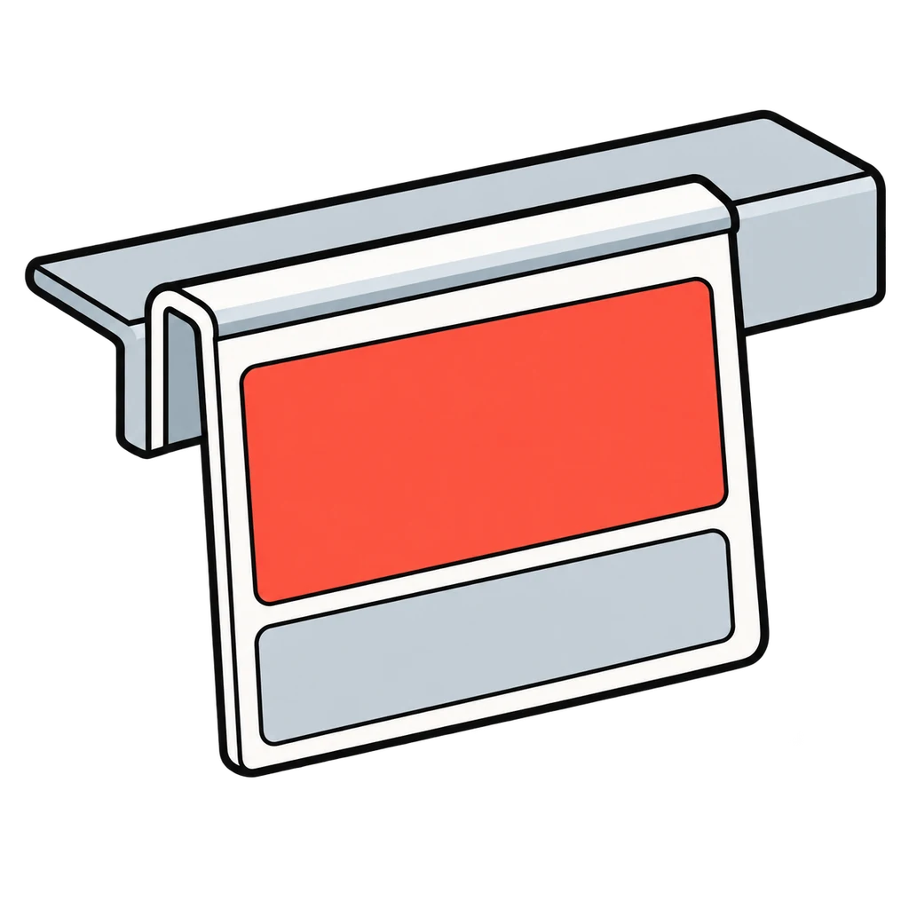
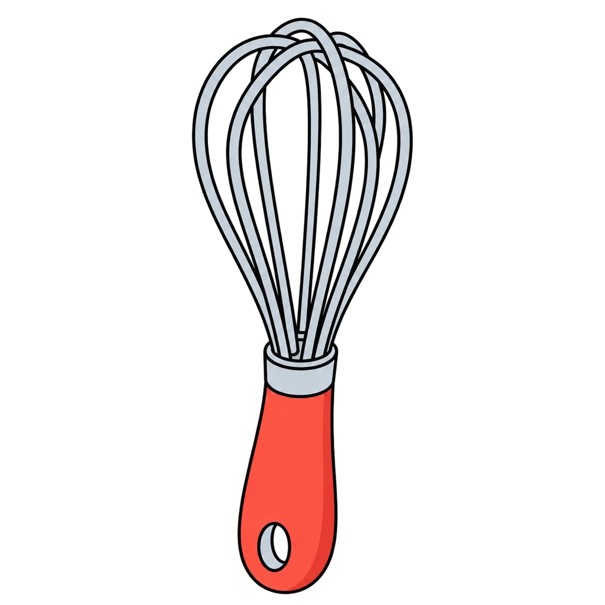
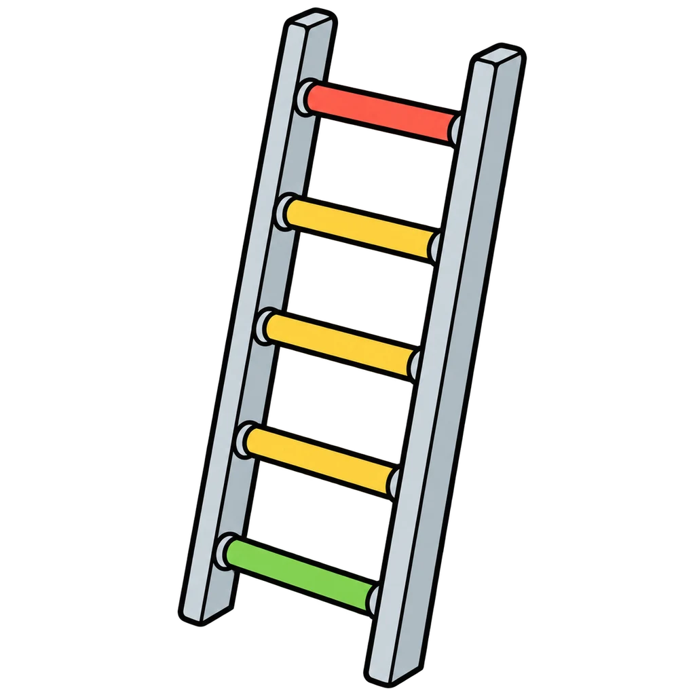
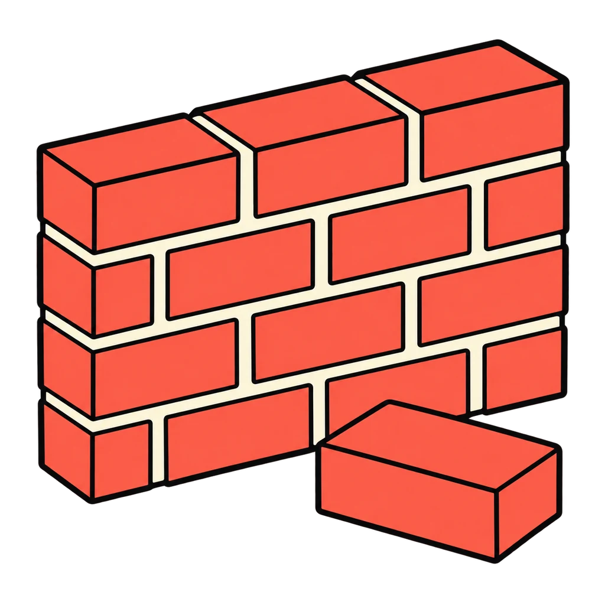
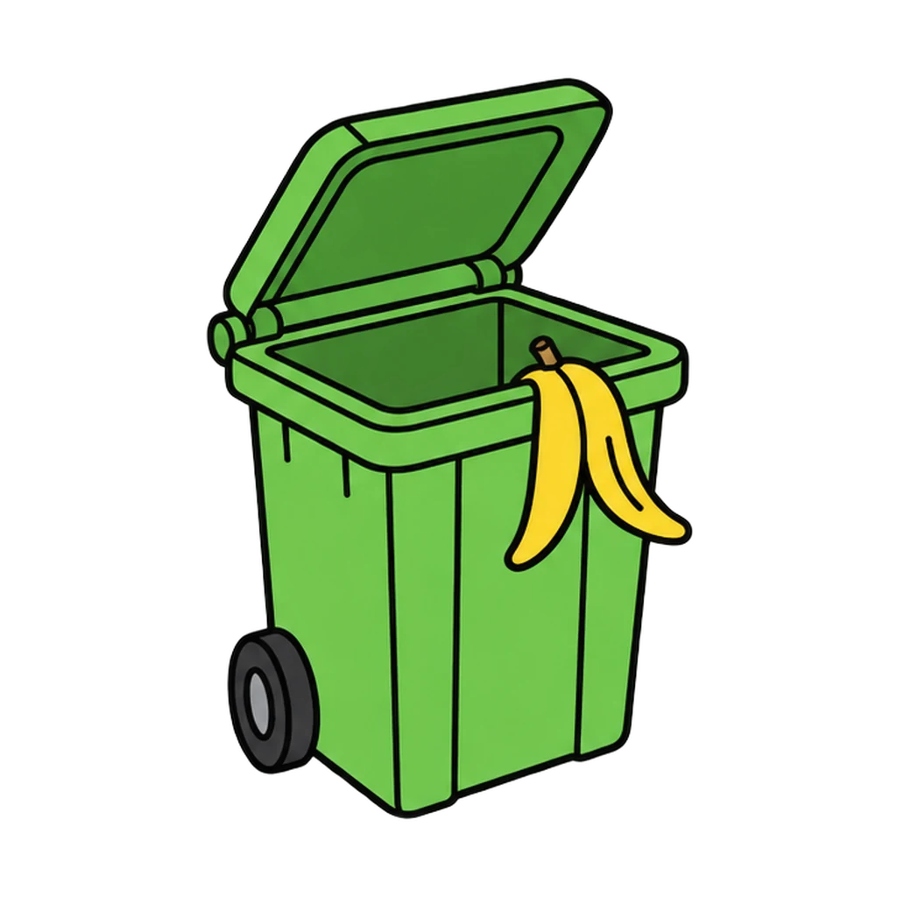
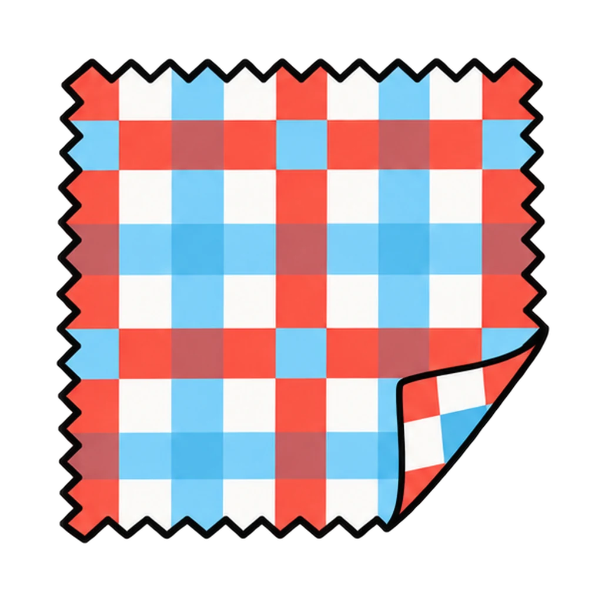
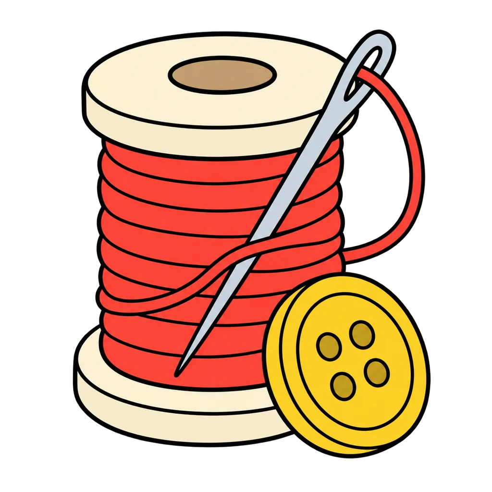
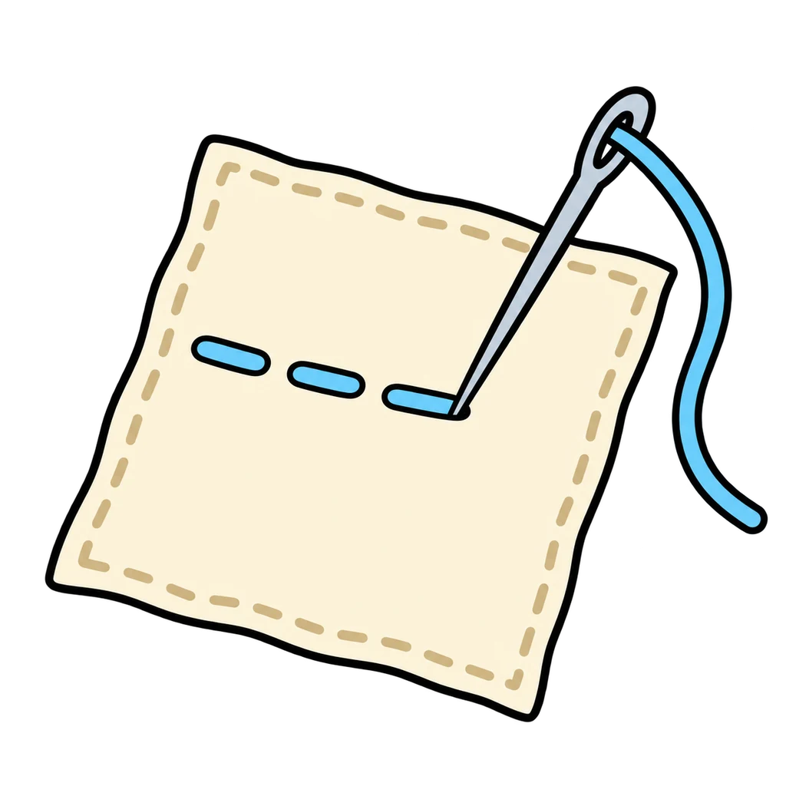
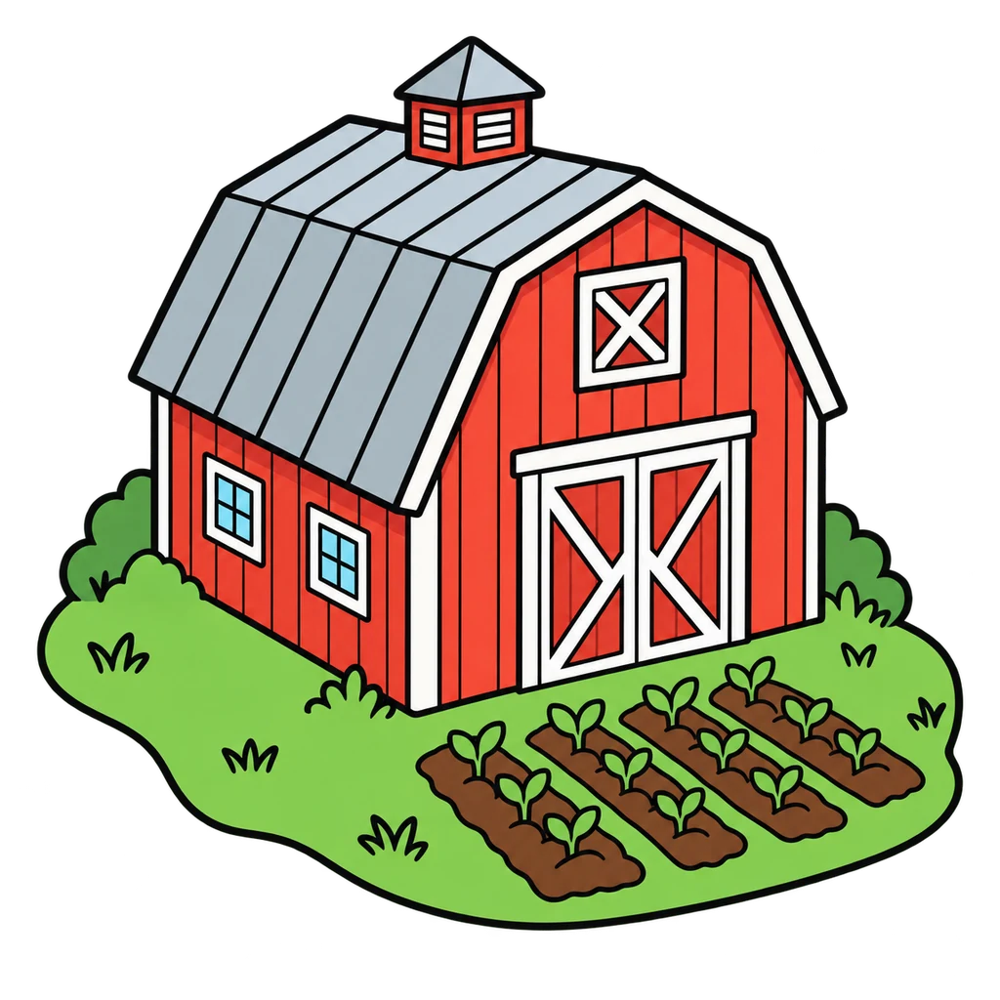

The Games
Short review games for the phone in your pocket or the board at the front of the room. Each one reviews a lesson in the lesson's own words. No sound. Play with no account and your score stays on this device. Sign in with the username your teacher gave you and your best score on every game counts on your class leaderboard.
One rule for every card: each unit has its own picture, and each game shows its own title picture at the same size.
Unit 0Launch: Welcome to the FACS Room
 Unit 0, Lesson 0.3Crash SiteThe ten survival items appear shuffled. Tap them into the expert ranking from 1 to 10, and each tap shows the reason. Then tap the five decision steps into order and match the rule of threes.Play
Unit 0, Lesson 0.3Crash SiteThe ten survival items appear shuffled. Tap them into the expert ranking from 1 to 10, and each tap shows the reason. Then tap the five decision steps into order and match the rule of threes.Play Unit 0, Lesson 0.2Room TourA picture of the FACS room with ten tour stops. A rule appears, and you tap the stop it belongs to. Then a precise word appears, and you tap its family: position, size, count, or shape.Play
Unit 0, Lesson 0.2Room TourA picture of the FACS room with ten tour stops. A rule appears, and you tap the stop it belongs to. Then a precise word appears, and you tap its family: position, size, count, or shape.Play Unit 0, Lessons 0.4 and 0.5Rules We WroteA line appears. Tap it into a norm someone could see or a feeling. Then a line from the Room and Lab Agreement appears, and you tap the section it lives in, ending with the three steps when a rule is broken.Play
Unit 0, Lessons 0.4 and 0.5Rules We WroteA line appears. Tap it into a norm someone could see or a feeling. Then a line from the Room and Lab Agreement appears, and you tap the section it lives in, ending with the three steps when a rule is broken.Play Unit 0, Lesson 0.1Six ObjectsThe tray from day 1: six objects, six units. Tap the unit each one stands for, then sort the things you do this year into the same six bins.Play
Unit 0, Lesson 0.1Six ObjectsThe tray from day 1: six objects, six units. Tap the unit each one stands for, then sort the things you do this year into the same six bins.Play Unit 0, Lessons 0.2 and 1.2Station RushThe sanitation routine, the handwashing steps, and the eight lab roles come as shuffled cards. Tap them into order before the clock runs out, then answer fast: whose job is it?Play
Unit 0, Lessons 0.2 and 1.2Station RushThe sanitation routine, the handwashing steps, and the eight lab roles come as shuffled cards. Tap them into order before the clock runs out, then answer fast: whose job is it?PlayUnit 1Kitchen Skills and Smart Eating
 Unit 1, Lesson 1.22Career LadderA career card appears. Tap the education bin it fits: none past high school, a certificate or two-year degree, or a four-year degree. Then a day-in-the-life line appears, and you tap the career.PlayUnit 1, Lesson 1.1Hazard HuntTwelve hazards are planted in a kitchen. Find them before the clock runs out, then sort them into the six hazard families.Play
Unit 1, Lesson 1.22Career LadderA career card appears. Tap the education bin it fits: none past high school, a certificate or two-year degree, or a four-year degree. Then a day-in-the-life line appears, and you tap the career.PlayUnit 1, Lesson 1.1Hazard HuntTwelve hazards are planted in a kitchen. Find them before the clock runs out, then sort them into the six hazard families.Play Unit 1, Lesson 1.11Label DetectiveRead a Nutrition Facts label and answer fast: the facts, the 5 and 20 rule, the whole-bag math, and the trick on the front.Play
Unit 1, Lesson 1.11Label DetectiveRead a Nutrition Facts label and answer fast: the facts, the 5 and 20 rule, the whole-bag math, and the trick on the front.Play Unit 1, Lessons 1.6 and 1.7Measure UpAn amount and an ingredient appear. Tap the right tool: dry measuring cups, liquid measuring cup, or measuring spoons. Then an equivalent, an abbreviation, or a doubled recipe line appears. Tap the answer.Play
Unit 1, Lessons 1.6 and 1.7Measure UpAn amount and an ingredient appear. Tap the right tool: dry measuring cups, liquid measuring cup, or measuring spoons. Then an equivalent, an abbreviation, or a doubled recipe line appears. Tap the answer.Play Unit 1, Lesson 1.9Nutrient SortA food card appears. Tap its bin: Carbohydrates, Proteins, Fats, Vitamins, Minerals, or Water. Then a job line or a body need appears, and you tap the nutrient that does it.PlayUnit 1, Lessons 1.2 and 1.3Safe or Not SafeA kitchen scene card appears. Tap Safe or Not Safe, and the feedback names the rule: Hands, Zone, or Cross. Then an emergency appears, and you tap the right first move from three.Play
Unit 1, Lesson 1.9Nutrient SortA food card appears. Tap its bin: Carbohydrates, Proteins, Fats, Vitamins, Minerals, or Water. Then a job line or a body need appears, and you tap the nutrient that does it.PlayUnit 1, Lessons 1.2 and 1.3Safe or Not SafeA kitchen scene card appears. Tap Safe or Not Safe, and the feedback names the rule: Hands, Zone, or Cross. Then an emergency appears, and you tap the right first move from three.Play
Unit 1, Lessons 1.16 and 1.15Smart ShopperA price and a quantity, or two options, appear. Tap the unit price or the better buy from three choices. Then a grocery item appears, and you tap the store section it lives in from six.Play
Unit 1, Lesson 1.5Tool IDA tool picture appears. Tap its name from four choices. Then a job appears, and you tap the tool for the job from four tool pictures. A miss names the tool and its job.Play Unit 1, Lesson 1.17Where Does It GoA food card appears. Tap the zone it lives in: Refrigerator, Freezer, Pantry, or Counter. Then a temperature, a date phrase, FIFO, or a leftover scenario appears, and you tap the answer from three.Play
Unit 1, Lesson 1.17Where Does It GoA food card appears. Tap the zone it lives in: Refrigerator, Freezer, Pantry, or Counter. Then a temperature, a date phrase, FIFO, or a leftover scenario appears, and you tap the answer from three.PlayUnit 2Me, My Goals, My Money
 Unit 2, Lesson 2.15Fact or HypeA dispatch appears. Tap the venture it moves, then Up, Down, or No change. Then a headline appears, and you tap Fact or Hype using three tests: who says it, is there a number, does it tell you to hurry.Play
Unit 2, Lesson 2.15Fact or HypeA dispatch appears. Tap the venture it moves, then Up, Down, or No change. Then a headline appears, and you tap Fact or Hype using three tests: who says it, is there a number, does it tell you to hurry.Play Unit 2, Lessons 2.4 and 2.5Goal CheckA goal appears. Tap it into SMART, Stretch, or Vague. Then tap the five steps of the decision model into order, and build the school-team ladder from this week at the bottom to the goal at the top.PlayUnit 2, Lessons 2.11, 2.12, 2.18, and 2.16Money MathA card shows one money problem and four answers. Tap the right one. First simple interest, the minimum payment trap, and compound growth. Then percent return and the two diversification sums.Play
Unit 2, Lessons 2.4 and 2.5Goal CheckA goal appears. Tap it into SMART, Stretch, or Vague. Then tap the five steps of the decision model into order, and build the school-team ladder from this week at the bottom to the goal at the top.PlayUnit 2, Lessons 2.11, 2.12, 2.18, and 2.16Money MathA card shows one money problem and four answers. Tap the right one. First simple interest, the minimum payment trap, and compound growth. Then percent return and the two diversification sums.Play Unit 2, Lessons 2.7 to 2.9Paycheck PuzzleRead a random pay stub and find the number you budget with. Then sort ten expense cards into Need or Want and get through the month in the black.Play
Unit 2, Lessons 2.7 to 2.9Paycheck PuzzleRead a random pay stub and find the number you budget with. Then sort ten expense cards into Need or Want and get through the month in the black.Play Unit 2, Lessons 2.14 and 2.19Risk LadderTap the seven venture cards onto the ladder from safest at the bottom to riskiest at the top, then the seven rungs from jar to new company stock. Then a venture card appears, and you tap what it really is.Play
Unit 2, Lessons 2.14 and 2.19Risk LadderTap the seven venture cards onto the ladder from safest at the bottom to riskiest at the top, then the seven rungs from jar to new company stock. Then a venture card appears, and you tap what it really is.Play Unit 2, Lesson 2.2Six LettersA statement appears. Tap it into Trait, Strength, or Interest. Then a career card appears, and you tap it into one of the six interest types, R, I, A, S, E, or C, each bin with its letter, word, and picture.Play
Unit 2, Lesson 2.2Six LettersA statement appears. Tap it into Trait, Strength, or Interest. Then a career card appears, and you tap it into one of the six interest types, R, I, A, S, E, or C, each bin with its letter, word, and picture.Play Unit 2, Lessons 2.10 and 2.11Ways to PayA clue appears: where the money comes from, the record it leaves, a risk, or a fee. Tap the way to pay from seven pictures. Then a line from the chart appears, and you tap Debit card or Credit card.Play
Unit 2, Lessons 2.10 and 2.11Ways to PayA clue appears: where the money comes from, the record it leaves, a risk, or a fee. Tap the way to pay from seven pictures. Then a line from the chart appears, and you tap Debit card or Credit card.PlayUnit 3Growing Up, Getting Along

Unit 3, Lesson 3.11Conflict LadderThe five steps for managing a conflict appear shuffled. Tap them into order, then the three repair steps. Then a scenario appears, and you tap the rung of the ladder it is on.PlayUnit 3, Lesson 3.16Eight JobsA toddler example appears. Tap the caregiver job it shows from eight. Then a job name appears, and you tap yes or no: does a babysitter do this? Then match each community support to what it does.Play
Unit 3, Lesson 3.14Family ShapesA made-up family scenario or a definition appears. Tap the family structure from eight pictures. Then tap the six life cycle stages into order around a loop, and match each job: care, teach, provide, belong.Play Unit 3, Lessons 3.12 and 3.6Green Flag, Red FlagA friend, a teammate, a cousin, a person in a group chat. Green flag or red flag? You have 3 seconds. Then tap the four refusal steps into order.Play
Unit 3, Lessons 3.12 and 3.6Green Flag, Red FlagA friend, a teammate, a cousin, a person in a group chat. Green flag or red flag? You have 3 seconds. Then tap the four refusal steps into order.Play Unit 3, Lessons 3.3 and 3.4Myth or FactA statement about adolescence appears. Tap MYTH or FACT. Then an everyday item appears with its picture, and you tap H for mostly heredity, E for mostly environment, or B for both.Play
Unit 3, Lessons 3.3 and 3.4Myth or FactA statement about adolescence appears. Tap MYTH or FACT. Then an everyday item appears with its picture, and you tap H for mostly heredity, E for mostly environment, or B for both.Play Unit 3, Lesson 3.17Safety WalkA cutaway of Eli's home appears: living room, kitchen, bathroom, bedroom, back door, and yard. Tap every toddler hazard, and each tap names the fix. Then tap fits or does not fit for the tube test.Play
Unit 3, Lesson 3.17Safety WalkA cutaway of Eli's home appears: living room, kitchen, bathroom, bedroom, back door, and yard. Tap every toddler hazard, and each tap names the fix. Then tap fits or does not fit for the tube test.Play Unit 3, Lessons 3.1 and 3.2Stage SortA sort card appears as text. Tap its stage from seven buttons, each with a picture cue and age range. Then a milestone from the Ages and Stages chart appears, and you tap the age row it belongs in.Play
Unit 3, Lessons 3.1 and 3.2Stage SortA sort card appears as text. Tap its stage from seven buttons, each with a picture cue and age range. Then a milestone from the Ages and Stages chart appears, and you tap the age row it belongs in.Play Unit 3, Lessons 3.7 and 3.8Toast or FireA kind of stress appears. Tap handle it, the kind you handle with a tool, or bring it, the kind you bring to an adult. Then the steps for a tool appear, and you tap the tool from six pictures.Play
Unit 3, Lessons 3.7 and 3.8Toast or FireA kind of stress appears. Tap handle it, the kind you handle with a tool, or bring it, the kind you bring to an adult. Then the steps for a tool appear, and you tap the tool from six pictures.PlayUnit 4Spaces We Live In
 Unit 4, Lesson 4.3Fix It KitA tool picture appears. Tap its name, then tap the tool for a job. Then four step sequences from the station cards appear shuffled, and you tap the cards into the right order.Play
Unit 4, Lesson 4.3Fix It KitA tool picture appears. Tap its name, then tap the tool for a job. Then four step sequences from the station cards appear shuffled, and you tap the cards into the right order.Play
Unit 4, Lesson 4.5Four BinsA definition or a household item appears. Tap it into the one of the four Rs that does the least harm. Then an item from a teen's bedroom appears, and you tap the green factor it improves.PlayUnit 4, Lesson 4.1Home MatchA clue about one of the seven jobs of a home appears. Tap the job from four choices. Then a housing clue appears, and you tap the housing type or the word it describes.Play
Unit 4, Lesson 4.9Pattern PatrolA swatch picture appears. Tap its bin: stripe, plaid, floral, geometric, or solid. Then a combination or a surface appears, and you tap works or fights, or actual or visual.Play Unit 4, Lessons 4.10 and 4.12Plan ReaderA floor plan symbol appears. Tap its name from four choices. Then a scale conversion or a plan-reading question appears, and you tap the answer from four choices.Play
Unit 4, Lessons 4.10 and 4.12Plan ReaderA floor plan symbol appears. Tap its name from four choices. Then a scale conversion or a plan-reading question appears, and you tap the answer from four choices.Play Unit 4, Lessons 4.10, 4.6, and 4.7Room DesignerA bedroom from above, one square to a foot. Place the furniture, keep the door clear and a 3-foot path open, then name the principle behind each placement.PlayUnit 4, Lesson 4.4Waste WatchA cutaway of the Marchetti-Oyelaran apartment appears. Tap everything wasting energy or water. Then the twelve fixes from the ranking table appear, and you sort each into free or costs money.Play
Unit 4, Lessons 4.10, 4.6, and 4.7Room DesignerA bedroom from above, one square to a foot. Place the furniture, keep the door clear and a 3-foot path open, then name the principle behind each placement.PlayUnit 4, Lesson 4.4Waste WatchA cutaway of the Marchetti-Oyelaran apartment appears. Tap everything wasting energy or water. Then the twelve fixes from the ranking table appear, and you sort each into free or costs money.Play Unit 4, Lesson 4.16Who Built ItA step from the Okafor room project appears. Tap the career that does it from four choices. Then a career card appears, and you tap its path: college degree, apprenticeship or trade school, or license.Play
Unit 4, Lesson 4.16Who Built ItA step from the Okafor room project appears. Tap the career that does it from four choices. Then a career card appears, and you tap its path: college degree, apprenticeship or trade school, or license.Play
Unit 5Make It, Mend It, Wear It Unit 5, Lesson 5.8Button UpTen step cards for sewing on a button appear shuffled. Tap them into order. Then a sentence about a sewn-on button appears, and you tap it into Passes or Not yet.Play
Unit 5, Lesson 5.8Button UpTen step cards for sewing on a button appear shuffled. Tap them into order. Then a sentence about a sewn-on button appears, and you tap it into Passes or Not yet.Play Unit 5, Lessons 5.3 and 5.4Fiber DetectiveA fiber or a clue: natural or manufactured, and which one? Then read the tag: what does the care symbol mean?Play
Unit 5, Lessons 5.3 and 5.4Fiber DetectiveA fiber or a clue: natural or manufactured, and which one? Then read the tag: what does the care symbol mean?Play Unit 5, Lesson 5.19Job CardsA card shows what a person does all day, with a picture. Tap the career from four names. Then a career card appears, and you tap it into one of three bins by the usual way in.Play
Unit 5, Lesson 5.19Job CardsA card shows what a person does all day, with a picture. Tap the career from four names. Then a career card appears, and you tap it into one of three bins by the usual way in.Play Unit 5, Lesson 5.4Laundry DaySeven laundry step cards appear shuffled. Tap them into order from sort to fold. Then a case card appears, a ruined garment, a set stain, or a care habit, and you tap the right answer from four.Play
Unit 5, Lesson 5.4Laundry DaySeven laundry step cards appear shuffled. Tap them into order from sort to fold. Then a case card appears, a ruined garment, a set stain, or a care habit, and you tap the right answer from four.Play
Unit 5, Lessons 5.6 to 5.9Stitch MatchA job appears. Tap the stitch that does it: running, backstitch, whipstitch, or hem. Sixty seconds, as many as you can.Play Unit 5, Lessons 5.5 and 5.10Tool KitA tool from the station kit appears. Tap its job from four choices, and the feedback tells you where it lives. Then a sewing machine picture appears, and you tap the part that matches the job or the name.Play
Unit 5, Lessons 5.5 and 5.10Tool KitA tool from the station kit appears. Tap its job from four choices, and the feedback tells you where it lives. Then a sewing machine picture appears, and you tap the part that matches the job or the name.Play Unit 5, Lesson 5.14Where Clothes GoEight journey cards for one sweatshirt appear shuffled. Tap them into order: the three steps every garment takes first, then the five ways out. Then a move a person can make appears, and you tap its bin.Play
Unit 5, Lesson 5.14Where Clothes GoEight journey cards for one sweatshirt appear shuffled. Tap them into order: the three steps every garment takes first, then the five ways out. Then a move a person can make appears, and you tap its bin.Play Unit 5, Lessons 5.13 and 5.12Worth the WearA price and a number of wears appear. Tap the cost per wear from four choices. Then a finding from a garment inspection appears, and you tap it into A good one or A fail.Play
Unit 5, Lessons 5.13 and 5.12Worth the WearA price and a number of wears appear. Tap the cost per wear from four choices. Then a finding from a garment inspection appears, and you tap it into A good one or A fail.Play
Unit 6From Farm to Table Unit 6, Lessons 6.1 and 6.2Farm to ForkA food shows up with its ten steps shuffled and two cards that do not belong. Order the chain against the clock, then call it: in season in New York this month, or not?Play
Unit 6, Lessons 6.1 and 6.2Farm to ForkA food shows up with its ten steps shuffled and two cards that do not belong. Order the chain against the clock, then call it: in season in New York this month, or not?Play Unit 6, Lesson 6.6Heat SortA cooking method card appears. Tap the DRY HEAT bin or the MOIST HEAT bin. Then a food picture appears, and you tap the best method for it from four. Some foods take more than one.PlayUnit 6, Lessons 6.8 and 6.9Kitchen FixA problem from the lab station card appears. Tap why it happened from four choices. Then a done-looks-like line appears, and you tap YES if that is what done looks like or NO if it is not yet.PlayUnit 6, Lesson 6.10One Dish, Three NamesA dish picture appears. Tap its form: FILLED DOUGH, RICE AND BEANS PLATE, or FLATBREAD. Then a sentence appears, and you tap which of the five factors it belongs to.Play
Unit 6, Lesson 6.6Heat SortA cooking method card appears. Tap the DRY HEAT bin or the MOIST HEAT bin. Then a food picture appears, and you tap the best method for it from four. Some foods take more than one.PlayUnit 6, Lessons 6.8 and 6.9Kitchen FixA problem from the lab station card appears. Tap why it happened from four choices. Then a done-looks-like line appears, and you tap YES if that is what done looks like or NO if it is not yet.PlayUnit 6, Lesson 6.10One Dish, Three NamesA dish picture appears. Tap its form: FILLED DOUGH, RICE AND BEANS PLATE, or FLATBREAD. Then a sentence appears, and you tap which of the five factors it belongs to.Play Unit 6, Lesson 6.7Rise or FallAn ingredient or a measurement card appears. Tap INDEPENDENT VARIABLE, DEPENDENT VARIABLE, or CONSTANT. Then a batch or a fizz cup appears, and you tap what usually happens.PlayUnit 6, Lessons 6.13 and 6.15Round UpA scaling line appears with the numbers already multiplied. Tap how many packages to buy. Then two prices appear, and you tap which is cheaper per ounce or what the swap saves. A calculator is on screen.PlayUnit 6, Lesson 6.11Set the TableTap a piece, then tap its cell on the place setting grid around the plate. Press CHECK and every piece in the right spot lights green. Then build the formal setting and answer the outside-in questions.PlayUnit 6, Lesson 6.4Twenty Dollar DinnerItem cards with prices from Fresh Foods Supermarket. Tap items into your cart, watch the total, and press CHECK to pass the rules. Then do it again at Corner Mart with the same rules and the same twenty dollars.Play
Unit 6, Lesson 6.7Rise or FallAn ingredient or a measurement card appears. Tap INDEPENDENT VARIABLE, DEPENDENT VARIABLE, or CONSTANT. Then a batch or a fizz cup appears, and you tap what usually happens.PlayUnit 6, Lessons 6.13 and 6.15Round UpA scaling line appears with the numbers already multiplied. Tap how many packages to buy. Then two prices appear, and you tap which is cheaper per ounce or what the swap saves. A calculator is on screen.PlayUnit 6, Lesson 6.11Set the TableTap a piece, then tap its cell on the place setting grid around the plate. Press CHECK and every piece in the right spot lights green. Then build the formal setting and answer the outside-in questions.PlayUnit 6, Lesson 6.4Twenty Dollar DinnerItem cards with prices from Fresh Foods Supermarket. Tap items into your cart, watch the total, and press CHECK to pass the rules. Then do it again at Corner Mart with the same rules and the same twenty dollars.Play Unit 6, Lessons 6.5 and 6.3Waste NotA scrap card appears. Tap the COMPOST bin or the NOT COMPOST bin. Then a waste example appears, and you tap where it happens from four places, and you name a farm method from its description.Play
Unit 6, Lessons 6.5 and 6.3Waste NotA scrap card appears. Tap the COMPOST bin or the NOT COMPOST bin. Then a waste example appears, and you tap where it happens from four places, and you name a farm method from its description.PlayUnit 7Launch: Career Readiness and FACS Shark Tank
 Unit 7, Lessons 7.6 and 7.8Break-EvenA numbers card appears: the class T-shirt, the cookies, or the tote bag. Tap the right amount, word, or fix from four. Then sort the tote bag's cost lines into Fixed cost or Unit cost.Play
Unit 7, Lessons 7.6 and 7.8Break-EvenA numbers card appears: the class T-shirt, the cookies, or the tote bag. Tap the right amount, word, or fix from four. Then sort the tote bag's cost lines into Fixed cost or Unit cost.Play Unit 7, Lessons 7.9, 7.10, and 7.11Lands or KillsA line about how a pitch was delivered appears. Tap Lands if it makes a pitch work or Kills if it ends it. Then sort lines into Hook, Not a hook, a Real ask, or Not an ask.Play
Unit 7, Lessons 7.9, 7.10, and 7.11Lands or KillsA line about how a pitch was delivered appears. Tap Lands if it makes a pitch work or Kills if it ends it. Then sort lines into Hook, Not a hook, a Real ask, or Not an ask.Play Unit 7, Lessons 7.6 to 7.9, plus 7.1Pitch PerfectA problem card and a customer card. Build the pitch from five columns and make every piece fit, scored against the rubric. Then the fast round: which resume bullet has all three parts?Play
Unit 7, Lessons 7.6 to 7.9, plus 7.1Pitch PerfectA problem card and a customer card. Build the pitch from five columns and make every piece fit, scored against the rubric. Then the fast round: which resume bullet has all three parts?Play Unit 7, Lessons 7.6, 7.7, and 7.10Problem FinderA business picture appears. Tap the problem it solves, then who has that problem. Then a too-big idea appears, and you tap the narrowed version a judge could hold and the unit whose skill the prototype uses.PlayUnit 7, Lesson 7.4STAR SortThe Feed the Class STAR story appears cut into four shuffled pieces. Tap them into order, then sort lines into Situation, Task, Action, or Result. Then sort a tell-me-about-yourself answer into its three parts.Play
Unit 7, Lessons 7.6, 7.7, and 7.10Problem FinderA business picture appears. Tap the problem it solves, then who has that problem. Then a too-big idea appears, and you tap the narrowed version a judge could hold and the unit whose skill the prototype uses.PlayUnit 7, Lesson 7.4STAR SortThe Feed the Class STAR story appears cut into four shuffled pieces. Tap them into order, then sort lines into Situation, Task, Action, or Result. Then sort a tell-me-about-yourself answer into its three parts.Play Unit 7, Lessons 7.3 and 7.5Trait SpotterA sign someone could see or hear appears. Tap the trait it shows: Composure, Communication, Problem solving, or Adaptability. Then tap each line into Evidence or Not evidence.Play
Unit 7, Lessons 7.3 and 7.5Trait SpotterA sign someone could see or hear appears. Tap the trait it shows: Composure, Communication, Problem solving, or Adaptability. Then tap each line into Evidence or Not evidence.PlayEach game names the lesson it reviews at the top of its page. They run on any phone or the classroom board and work offline once loaded. A score is kept on the device it was played on and nowhere else until the class sign in exists; no accounts, no cookies. Every card runs on the same clock: 10 seconds plus one for every three words on the card and its choices, never under 12 or over 35, with 10 points for a right answer, up to 5 more for a fast one, and no penalty for a wrong tap beyond the streak. To add a game, drop a data file and a manifest entry in _tools/games and rebuild.